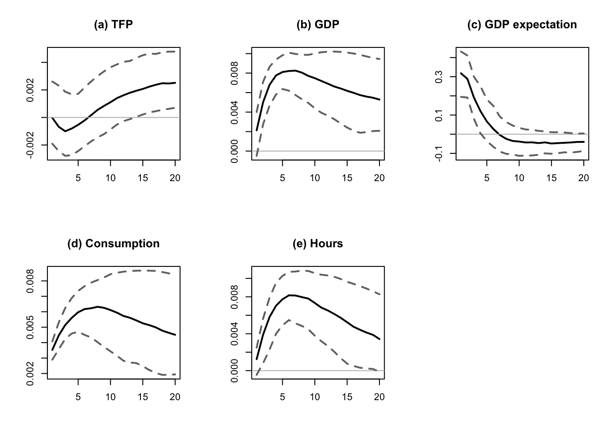
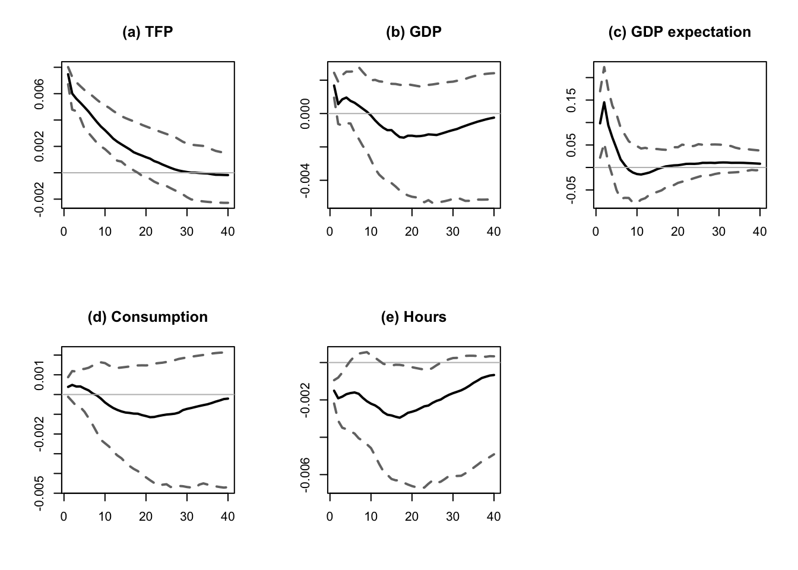
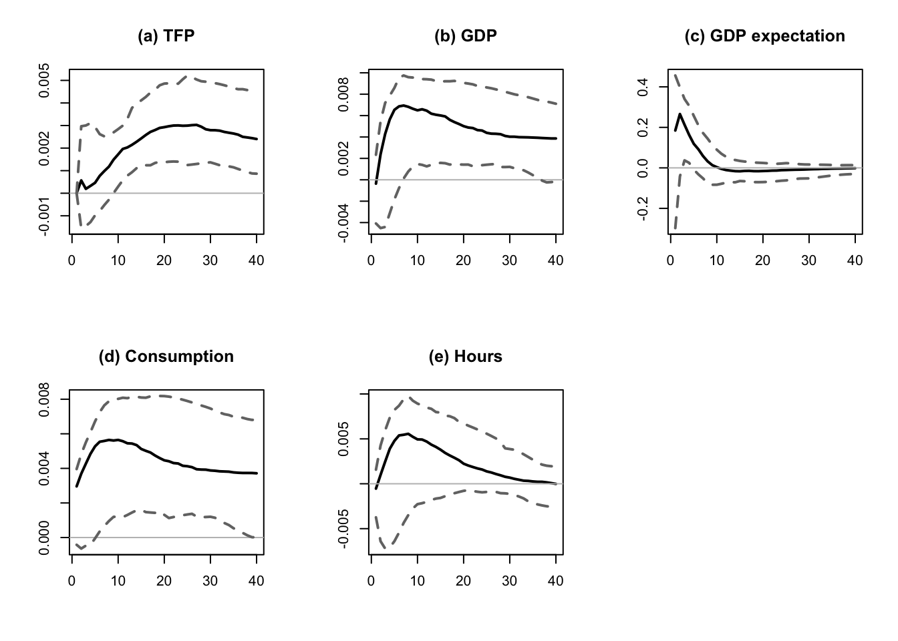
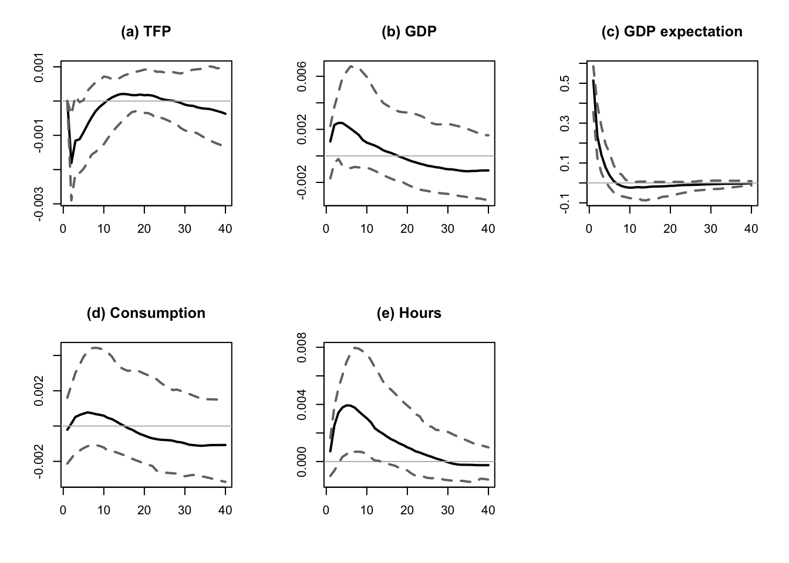

Chapter 6 Forecast error variance maximization
6.1 The main (unconditional) approach
The approach presented in this section exploits the derivations of Uhlig (2004).
Consider a process \(\{y_t\}\) that admits the infinite MA representation of Eq. (1.4). Let \(Q\) be an orthogonal matrix, an alternative decomposition of \(y_t\) is: \[\begin{eqnarray} y_t&=&\sum_{h=0}^{+\infty}\Psi_h\underbrace{\eta_{t-h}}_{Q\tilde \eta_{t-h}} = \sum_{h=0}^{+\infty}\underbrace{\Psi_hQ}_{\tilde\Psi_h}\tilde \eta_{t-h} = \sum_{h=0}^{+\infty}\tilde\Psi_h\tilde \eta_{t-h}, \end{eqnarray}\] where \(\tilde \eta_{t-h}=Q'\eta_{t-h}\) are the white-noise shocks associated with the new MA representation, \(Q\) being an orthgonal matrix. (They also satisfy \(\mathbb{V}ar(\tilde\eta_t)=Id\).)
The \(h\)-step ahead prediction error of \(y_{t+h}\), given all the data up to, and including, \(t-1\) is given by \[ e_{t+h}(h)=y_{t+h}-\mathbb{E}_{t-1}(y_{t+h})=\sum_{j=0}^h\tilde \Psi_h\tilde \eta_{t+h-j}. \]
The variance-covariance matrix of \(e_{t+h}(h)\) is \[ \Omega^{(h)}=\sum_{j=0}^h\tilde \Psi_j\tilde \Psi_j'=\sum_{j=0}^h \Psi_j \Psi_j'. \]
We can decompose \(\Omega^{(h)}\) into the contribution of each shock \(l\) (\(l^{th}\) component of \(\tilde{\eta}_t\)): \[ \Omega^{(h)}=\sum_{l=1}^n\Omega_l^{(h)}(Q) \] with \[ \Omega_l^{(h)}(Q) =\sum_{j=0}^h(\Psi_jq_l)(\Psi_jq_l)', \] where \(q_l\) is the \(l^{th}\) column of \(Q\).
This decomposition can be used with the objective of finding the impulse vector \(b\) that is s.t. that it explains as much as possible of the sum of the \(h\)-step ahead prediction error variance of some variable \(i\), say, for prediction horizons \(h \in [\underline{h} , \overline{h}]\).
Formally, the task is to explain as much as possible of the variance \[ \sigma^2(\underline{h},\overline{h},q_1)=\sum_{h=\underline{h}}^{\overline{h}} \sum_{j=0}^h\left[(\Psi_jq_1)(\Psi_jq_1)'\right]_{i,i} \] with a single impulse vector \(q_1\).
Denote by \(E_{ii}\) the matrix that is filled with zeros, except for its (\(i,i\)) entry, set to 1. We have: \[\begin{eqnarray*} \sigma^2(\underline{h},\overline{h},q_1)&=&\sum_{h=\underline{h}}^{\overline{h}} \sum_{j=0}^h\left[(\Psi_jq_1)(\Psi_jq_1)'\right]_{i,i}=\sum_{h=\underline{h}}^{\overline{h}} \sum_{j=0}^h Tr\left[E_{ii}(\Psi_jq_1)(\Psi_jq_1)'\right]\\ &=&\sum_{h=\underline{h}}^{\overline{h}} \sum_{j=0}^h Tr\left[q_1'\Psi_j'E_{ii}\Psi_j q_1\right]\\ &=& q_1'Sq_1, \end{eqnarray*}\] where \[\begin{eqnarray*} \begin{array}{lll}S&=&\sum_{h=\underline{h}}^{\overline{h}}\sum_{j=0}^{h}\Psi_j'E_{ii}\Psi_j\\ &=&\sum_{j=0}^{\overline{h}}(\overline{h}+1-max(\underline{h},j))\Psi_j'E_{ii}\Psi_j\\ &=&\sum_{j=0}^{\overline{h}}(\overline{h}+1-max(\underline{h},j))\Psi_{j,i}'\Psi_{j,i}\\ \end{array} \end{eqnarray*}\] where \(\Psi_{j,i}\) denotes row \(i\) of \(\Psi_{j}\), i.e., the response of variable \(i\) at horizon \(j\) (when \(Q=Id\)).
The maximization problem subject to the side constraint \(q_1'q_1=1\) can be written as a Lagrangian: \[ L=q_1'Sq_1-\lambda(q_1'q_1-1), \] with the first-order condition \(Sq_1=\lambda q_1\) (the side constraint is \(q_1'q_1=1\)). From this equation, we see that the solution \(q_1\) is an eigenvector of \(S\), the one associated with eigenvalue \(\lambda\). We also see that \(\sigma^2(\underline{h},\overline{h},q_1)=\lambda\). Thus, to maximize this variance, we need to find the eigenvector of \(S\) that is associated with the maximal eigenvalue \(\lambda\). That defines the first principal component (see Section 10.1). That is, if \(S\) admits the following spectral decomposition: \[ S = \mathcal{P}D\mathcal{P}', \] where \(D\) is diagonal matrix whose entries are the (ordered) eigenvalues: \(\lambda_1 \ge \lambda_2 \ge \dots \ge \lambda_n \ge 0\), then \(\sigma^2(\underline{h},\overline{h},q_1)\) is maximized for \(q_1 = p_1\), where \(p_1\) is the first column of \(\mathcal{P}\).
The following code identifies a ``main GDP shock’’ using Uhlig’s method.
Code
library(IdSS)
library(vars)
library(Matrix)
# Declare data:
TFP <- USsentiment$tfp
GDP <- USsentiment$ln_gdp_pc
EXPECTATION <- USsentiment$expectation
CONS <- USsentiment$ln_consumption_pc
HOURS <- USsentiment$ln_hours_pc
y <- cbind(TFP,GDP,EXPECTATION,CONS,HOURS)
names.of.variables <- c("TFP","GDP","GDP expectation","Consumption","Hours")
colnames(y) <- names.of.variables
names.of.shocks <- c("Main GDP shock")
#define horizons for FEVM
H1 <- 1
H2 <- 20
variable <- 2 # variables for which we want to maximize FEVD
norm <- 15 # horizon at which the impact of the shock
# is normalized to be positive
res.svar.fevmax <- svar.fevmax(y,p=2,
nb.shocks=1,
names.of.shocks,
H1,
H2,
variable,
norm,
nb.periods.IRF = 20,
bootstrap.replications = 100, # This is used in
#the parametric bootstrap only
confidence.interval = 0.90, # expressed in pp.
indic.plot = 1 # Plots are displayed if = 1.
)
# Compute variance decomposition:
Variance.decomp <- variance.decomp(res.svar.fevmax$simulated.IRFs)
vardecomp <- Variance.decomp$vardecomp
mean(vardecomp[2,2,20,,1]) # mean contribution (across all simulated IRFs)## [1] 0.7946948Code
## [1] 1.373046
Figure 6.1: Main GDP shock.
The ``main GDP shock’’ explains 79% of the variance of GDP at horizon 20.
Barsky and Sims (2011) exploit this approach to identify a “TFP news shock”, that they define as the shock (a) that is orthogonal to the innovation in current utilization-adjusted TFP and (b) that best explains variation in future TFP. Levchenko and Pandalai-Nayar (2018) add a “sentiment shock” that they define as the shock (a) that is orthogonal to both the innovation in current utilization-adjusted TFP and to the TFP news shock, and (b) that best explains variation in expectations or sentiment. The following code provides a teaching reconstruction inspired by their application. It uses the independently reconstructed USsentiment dataset: current-vintage public U.S. macroeconomic series, Fernald’s utilization-adjusted TFP, and a one-quarter-ahead Greenbook/Tealbook real-GDP-growth forecast. It is therefore close to, but not an exact replication of, the authors’ estimates. As above, FEVD maximization is used to impose the zero restrictions.
Code
names.of.shocks <- c("TFP surprise","TFP news","Sentiment")
#define horizons for FEVM
H1 <- array(0,c(1,3))
H2 <- array(0,c(1,3))
H1[1,1] <- 1
H1[1,2] <- 1
H1[1,3] <- 1
H2[1,1] <- 1
H2[1,2] <- 40
H2[1,3] <- 2
variable <- c(1,1,3) # variables for which we want to maximize FEVD
norm <- c(1,20,2) # horizon at which the impact of the
# shock is normalized to be positive
set.seed(4817)
res.svar.fevmax <-
svar.fevmax(y,p=2,
nb.shocks=3,
names.of.shocks,
H1,
H2,
variable,
norm,
nb.periods.IRF = 40,
bootstrap.replications = 100, # This is used in the
#parametric bootstrap only
confidence.interval = 0.90, # expressed in pp.
indic.plot = 1 # Plots are displayed if = 1.
)
Figure 6.2: Impulse responses in a teaching reconstruction of the Levchenko and Pandalai-Nayar (2020) identification: TFP surprise, TFP news, and sentiment shocks identified through FEVD maximization and zero restrictions.

Figure 6.3: Impulse responses in a teaching reconstruction of the Levchenko and Pandalai-Nayar (2020) identification: TFP surprise, TFP news, and sentiment shocks identified through FEVD maximization and zero restrictions.
Code
## [1] 0.09992346
Figure 6.4: Impulse responses in a teaching reconstruction of the Levchenko and Pandalai-Nayar (2020) identification: TFP surprise, TFP news, and sentiment shocks identified through FEVD maximization and zero restrictions.
Sentiment shocks explain 10% of the variance of GDP at horizon 40. TFP-news shocks explain 60%, and the two shocks jointly explain 70%.
6.2 Restrictions based on narrative historical decomposition
A related approach, introduced by Antolín-Díaz and Rubio-Ramírez (2018), consists in imposing that, on some specific dates (based on narrative information), a particular shock was the most important contributor to the unexpected movement of some variable during a particular period.11 This can be formalized in two different ways (respectively called Type A and Type B by Antolín-Díaz and Rubio-Ramírez (2018)):
- Type A: A given shock is the most important (least important) driver of the unexpected change in a variable during some periods. For these periods, the absolute value of its contribution to the unexpected change in a variable is larger (smaller) than the absolute value of the contribution of any other structural shock.
- Type B: A given shock is the overwhelming (negligible) driver of the unexpected change in a given variable during the period. For these periods, the absolute value of its contribution to the unexpected change in a variable is larger (smaller) than the sum of the absolute value of the contributions of all other structural shocks.